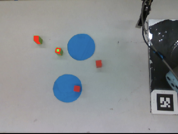

Introduction
Motivation
This project was intended to contribute to research into unsupervised learning through robotic interaction, and more specifically learning unsupervised object-centric representations. Object-centric representations are hoped to provide powerful functionlity like, models for physics understanding, multi-agent prediction and planning and causal reasoning [Stocking].
Original and Final Goals
We wanted to build a robotic system that could solve a task in an object-centric, partially-unobservable environment. Our goal was to use a UR5 robot arm and an RGB/Depth camera to interact with with blocks and move them to a goal location. There would be two goal locations and the correct goal location will be unknown to the robot at the beginning, and the robot will have to respond to outside feedback to learn the correct goal. We aimed to develop an algorithm for solving the task using classical methods to serve as a baseline to compare ML approaches. Our reach goal was to replace the perception, action planning, or robotic control with an unsupervised deep learning algorithm. In the end, we made progress an unsupervised object-centric deep neural network to replace the perception system. This kind of task is difficult for current machine learning techniques, but representations that can keep track of multiple objects and update knowledge about their respective properties should make it possible for machine learning to solve the task.
Design
Overview
Our design involved a the table-block environment which is observed by the camera. The camera reports the state of the environment to an algorithm which directs the arm to change the environment. When blocks are placed onto a goal location, the robot waits for human feedback to observe the reward state, which then inform the following actions of moveing blocks.
Environment
The environment consists of a table with rectangular wooden blocks that are red or green. The goal locations are blue cardboard circles taped to the table.
Implementation
Experimental Setup

We used a setup that includes...
Robotic Arm

We used a UR5 Robot arm...
Gripper

We used a Robotiq gripper...
Camera

We used a ...
More text here if needed...
Software
Our Software uses X apporach and y design. The figure to the right shows the design...
Software Architecture
Unsupervised Approach
We also performed some experiments on applying unsupervised learning to improve the perception abilities of the system...

Results
Section 1
Describe results...
Heading 1
Heading 2
Heading 3
Heading 4
Section 2
Describe another aspect of results...